載入 Tux Paint
Linux/Unix 的使用者
Tux Paint 會建立一個啟動的圖示在你的 GNOME 或 KDE 的"圖形"目錄選單之中。
另一個方式，你可以在 shell 的提示符號(如： "$")後面輸入這個指令：
$ tuxpaint如果有任何的錯誤發生，錯誤訊息會顯示在終端機上(標準錯誤輸出介面)。
Windows 的使用者
Tux Paint如果你是使用安裝程式安裝 Tux Paint 的話，在安裝過程中會詢問你要將捷徑放在開始功能表的哪裡， 還有桌面的捷徑。如果你同意建立了捷徑，你就可以直接由開始功能表中的 'Tux Paint' 目錄裡啟動 Tux Paint (如：在 Windows XP 的"所有程式"裡)，或是雙擊桌面上 "Tux Paint" 的圖示。
如果你是下載安裝 Tux Paint 的 ZIP 壓縮檔，或是你是由安裝程式安裝的，但選擇不建立捷徑的話， 你必須要到 'Tux Paint' 的目錄中雙擊
tuxpaint.exe的圖示。'Tux Paint' 的安裝程式預設會將 Tux Paint 的目錄放在 "
C:\Program Files\>/code>" 裡， 你可以在安裝程式執行過程裡來改變他。如果你使用下載的 ZIP 壓縮檔，就看你解開壓縮檔時要將 Tux Paint 的目錄放到哪裡去。
麥金塔 OS X 的使用者
只要雙擊 "Tux Paint" 的圖示。
啟始畫面
當一開始啟動 Tux Paint 時會出現一個啟始畫面。
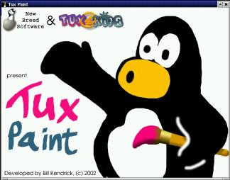
當啟動完成後按下任一鍵或滑鼠鍵就可以繼續。 (或者等 30 秒後這個啟始畫面也會自動關閉。)
主畫面
主畫面可以分成以下幾個部份：
- 左邊：工具列
工具列中包含了繪圖及編輯的工具。
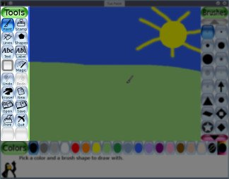
- 中間：圖紙
這個在螢幕中間最大範圍的就是圖紙，這就是你畫圖的地方了。
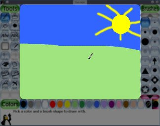
備註: 圖紙的尺寸就是 Tux Paint 的大小。你可以使用 Tux Paint Config 設定工具或是其他的方式來變更 Tux Paint 的大小。詳細內容請見 OPTIONS 文件。
- 右邊：選項
依照目前的工具會顯示出不同的選項。例如當左邊選「繪圖」工具時， 右邊就會出現好幾種不同的筆刷。當左邊選「圖章」工具時， 右邊就會出現可以使用的圖樣來。
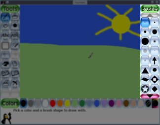
- 下邊：顏色
一個十五種顏色的調色板在接近螢幕底部的地方。
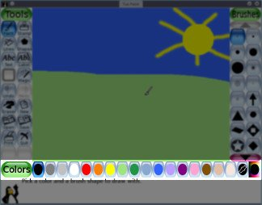
- 底部：說明區域
當你在畫畫時，在螢幕的最底部，Linux 的企鵝 - Tux 會提供提示和訊息。
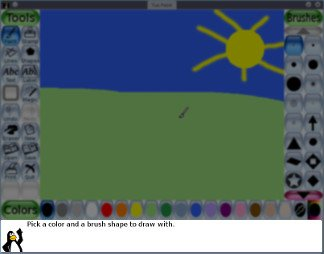
可用的工具
繪圖工具
- 繪圖(刷子)
- 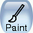
這個刷子繪圖工具讓你畫徒手畫，可以使用不同的筆刷(在右邊選項部份選擇) 和顏色(在底下的調色板來選擇顏色)。
如果你持續按住滑鼠按鍵，然後移動滑鼠，就會畫在移動的路徑上。
當你在畫的同時會有聲音出來，愈大的筆刷聲音愈低沉。
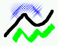
- 圖章 (橡皮圖章)
圖章工具就像是橡皮圖章，或是貼海報，可以讓你印上預先畫好的圖形， 或是現實的照片在圖紙上。(像是一張馬的圖形，或是一顆樹，或是月亮。)
當你在圖紙上移動滑鼠時會看到有一個框線跟著滑鼠移動，顯示出圖章會印在什麼地方，以及他有多大。
圖章的種類有好幾種 (例如：動物的，行星的，外太空的，汽車的，人的，等等)， 可以使用左右方向鍵來瀏覽。
有的圖章可以有顏色或著色, 如果圖紙下方的調色盤可使用的話，你就可以在蓋圖章前先點選調色盤來改變圖章的色彩。
圖章可以放大縮小，很多圖章還可以上下左右翻轉，都在右下方來控制。
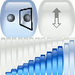
不同的圖章可以有不同的音效和講解，在左下角的按鈕(靠近 Linux 的企鵝 Tux 的地方)可以讓你 重覆目前圖章的音效和講解。
(註：如果設定了 "
nostampcontrols" 選項的話，Tux Paint 就不會顯示出左右鏡射，上下翻轉，放大和縮小的控制鈕。請見「選項」文件。)
- 畫線
這個工具可以使用不同的筆刷和顏色來幫助你畫出真正的直線。
按下滑鼠鍵不要放開，按下的那個點就是直線的起點，然後移動你的滑鼠， 可以看到一條彈性的線隨著滑鼠移動，顯示出線將會畫在什麼地方。
放開滑鼠鍵就畫下一條直線了，而且會聽到一個彈起來的聲音。
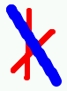
- 形狀
- 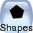
這個工具可以讓你畫出一些簡單的填滿或者是中空的形狀來。
在右邊的選取列中選擇一個形狀(圓形，正方形，橢圓形等)。
在圖紙上按下滑鼠鍵不要放開，移動滑鼠把這個形狀展開來。 有些形狀可以改變長寬比例(如：長方形，橢圓形)， 有些不行(如：正方形，圓形)。
當你展開到想要的大小時，就放開滑鼠。
- 正常模式
現在你可以將滑鼠在圖紙上轉圈圈來旋轉形狀的角度。
再按一下滑鼠鍵就會用目前選定的顏色將形狀畫下來。
- 簡單模式
- 如果設定了形狀的簡單模式(如：使用了 "
--simpleshapes" 啟動參數)， 只要一放開滑鼠鍵就會把形狀畫出來了(不會有旋轉的步驟)。
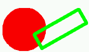
- 字母
選擇一種字型(由右邊選擇列來選)和顏色(由底部調色板來選)，在圖紙上點一下， 就會看到一個游標在閃爍。輸入英文字母就會看到出現在畫面上。
按下 [Enter] 鍵後英文字母就會畫到圖紙上，而游標會跳到下一行。
另一個方式是，按下 [Tab] 鍵後文字就會畫到圖紙上，而游標則移到文字的右邊， 而不是跳到下一行。(這可以用在同一行字有不同的顏色、文字、字型和大小，例如：
就像這樣。)當一行輸入到一半時滑鼠在其他圖面上點一下，整行文字就會移過去。 而你可以繼續輸入。
- 各國文字輸入
Tux Paint 可以輸入不同語言的文字。大部份的拉丁文 (A-Z, ñ, è, 等等.) 可以直接輸入。 部份語言輸入前需要將 Tux Paint 切換到不同的輸入模式，而且部份文字必須使用組合鍵來輸入。
當 Tux Paint 的地區設定為某一種語言時，就可以提供不同的輸入模式， 同一個按鍵會在一般模組 (英文字母) 和特定地區模式中循環。
目前有效輸入方式的地區支援，以及按鍵是切換式的或是循環式的方式，列示如下。 註 很多的字型檔是不包括所有語言的所有文字的，所以有時候你需要改變字型來看你試著輸入的文字。
- 日文 — Romanized Hiragana and Romanized Katakana — right [Alt]
- 韓文 — Hangul 2-Bul — right [Alt] or left [Alt]
- 繁體中文 — Traditional Chinese — right [Alt] or left [Alt]
- 泰文 — right [Alt]
- 魔術 (特殊效果)
魔術工具包含了一組特殊工具。在右邊選擇一種魔術效果，然後依照不同的工具， 有些要按著在圖畫上來施展他，有些呢只要按一下就行了。
如果這個工具是用按著在圖畫上來施展的話，繪圖按鈕會出現在右邊的魔術工具清單裡。如果這個工具是按一下就會對整張圖畫產生效果的話，會有一個全圖的按鈕出現在右邊。
請看 "每一個魔術工具的簡介" (在 magic-docs 目錄裡)。
- 橡皮擦
這個用法和繪圖一樣，只要按著滑鼠鍵(或者同時拖動)的地方，圖案就會被擦掉。(可能會變白色或是背景圖案，要看圖畫而定。)
有幾種的橡皮擦尺寸以及圓形或是方形可供選擇。
當你移動滑鼠時就會看到一個蠻大的正方形隨著滑鼠的游標移動， 顯示出將會把什麼地方擦成白色的。
當你在擦東西時會聽到橡皮擦在來回推擦的聲音。
其他的控制
- 回復
按下這個工具將會回復上一個動作，你可以回復不只一次的動作。
註：你也可以使用 [Control]-[Z] 的組合鍵來作回復。
- 重作
當你按下「回復」回復了一個動作之後， 你可以使用「重作」來再作一次那個被回復了的動作。
你可以重作很多次，和你回復一樣，而不用真的要重畫那些被回復了的部份。
註：你也可以使用 [Control]-[R] 的組合鍵來重作。
- 新圖
按下新圖按鈕將會開啟一張新的圖紙，一個交談框會跳出來讓你選擇是要使用背景色圖紙，或是一個啟始圖案來開啟新的圖畫。 你會先被訊問到底要怎麼作。
註：你也可以使用 [Control]-[N] 的組合鍵來開啟一張新圖。
起始圖形起始圖形可以像是一頁的著色簿(黑白線條的圖形，可以填色上去)， 或是像立體的圖片一樣，你可以畫些東西在裡面。
如果你是載入一張起始圖形來作畫時，當按下「儲存」時他會儲成一張新圖 (他不會覆蓋掉原始的「起始圖形」，所以你可以再一次的使用他)。
- 開啟
這會將你所存的所有圖畫列出來，如果圖畫多到一個畫面放不下的話， 可以使用畫面上的上下按鈕來捲動所有的圖畫。
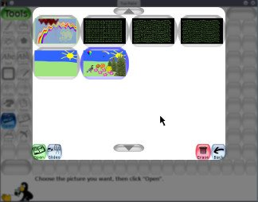
選一張圖畫點他一下，然後 ...
按下左下角綠色的「開啟」鈕，來載入選擇的圖畫。
(也可以直接在圖畫上快速的點二下就可以開啟他。)

按下右下角棕色的「刪除」鈕(垃圾桶)就會刪掉所選擇的圖畫。 (會問你是否確定要刪除。)

按下左下角藍色的「幻燈片」鈕就會進入幻燈片模式， 詳細用法請參見 "幻燈片"。
或是按下右下角紅色箭頭的「回復」鈕，就會離開回到正在畫的圖畫。
如果選擇開啟一張圖畫，而目前正在畫的圖還沒有儲存， 就會被訊問是否要存檔。(請見下面的「儲存」。)
註：你也可以使用 [Control]-[O] 的組合鍵來使用「開啟」的操作。
- 儲存
這會儲存你目前的圖畫。
如果你之前沒有儲存過這張圖，就會儲存成一張新的圖。 (也就是說會建立一個新檔案。)
註：這個動作不會問你任何的問題(譬如說檔名)，他就是直接儲存了這張圖， 而且會聽到按下快門的聲音。
如果這張圖已經存過檔了，或者是這張圖是用「開啟」圖畫的方式打開的， 而且已經修改過了，那麼在儲存時就會先問你是否要覆蓋掉舊的版本， 或是儲存一個新的檔案。
(註：如果 "
saveover" 或是 "saveovernew" 選項被設定了， 那麼儲存時就不會問這個問題了。請參閱「選項」文件的說明。)註：你也可以使用 [Control]-[S] 組合鍵來儲存。
- 列印
按下這個按鈕就會將你的圖畫列印出來!
在大部份的平台上，你也可以按住 [Alt] 鍵 (在 Macs 上叫作[Option]) 再點擊「列印」鈕來呼叫出列印的交談框。 不過如果你是執行全螢幕模式的話就不能這麼作。請見後面說明。
- 關閉列印功能
如果不要列印的選項被設定的話 (可以在 Tux Paint 的規劃檔裡設定 "
noprint=yes" ，或是使用 "--noprint" 命令列的啟動參數)，「列印」按鈕就會失效。請參閱「選項」文件的說明。
- 限制列印功能
如果延遲列印的選項被設定的話 (可以在 Tux Paint 的規劃檔裡設定 "
printdelay=SECONDS" ，或是使用 "--printdelay=SECONDS" 命令列的啟動參數)，你只能間隔每 SECONDS 秒才能再列印。例如設定了 "
printdelay=60" 的話，你就要間隔一分鐘後才能再列印。請參閱「選項」文件的說明。
- 列印命令
(只限於 Linux 和 Unix )
Tux Paint 的列印是將圖檔轉換成 PostScript 格式之後再將他傳給外部的程式。預設的程式是：
lpr這組命令可以在 Tux Paint 的規劃檔裡用 "printcommand" 的設定來改變他。
當不是執行全螢幕模式時，按住 [Alt] 鍵再按下 'Print' 鍵，這時另一個程式會啟動。 這個程式預設是 KDE 的圖形列印交談框：
kprinter這組命令可以在 Tux Paint 的規劃檔裡用 "altprintcommand" 的設定來改變他。
其他關於列印命令的資訊請參閱「選項」文件的說明。
- 印表機設定
(Windows 和 Mac OS X)
預設的情況下，按下「列印」按鈕後 Tux Paint 直接用預設的印表機設定值， 將圖畫由預設印機機列印出來。
但是當你按住 [Alt] 鍵(或是 [Option] )才去點列印鈕時，只要不是在全螢幕的模式下， 印表機設定的對話框就會跳出來，你可以修改印表機的設定。
你可以使用 "
--printcfg" 啟動參數，或是在 Tux Paint 的規劃檔裡設定 "printcfg=yes" 的選項來儲存 Tux Paint 的印表機規劃檔 ("tuxpaint.cfg")。如果設定了 "printcfg" 選項的話，印表機的設定會由你個人目錄裡的 "
print.cfg" 設定檔來讀取，任何的修改也會存到那個檔案裡。請參閱「選項」文件的說明。
- 列印交談框的選項
當按下 [Alt] 鍵 (或 [Option]) 同時按下「列印」按鈕時， Tux Paint 預設只會叫出列印交談框。 ( 或是在 Linux/Unix 執行 "altprintcommand" ，例如用 "kprinter" 取代 "lpr" )
不過這個行為可以被改變，你可以在命令列使用 "
--altprintalways" 或是在 Tux Paint 的規劃檔裡用 "altprint=always" 讓列印交談框總是會出現。 或者你也可以使用 "--altprintnever" 或 "altprint=never" 讓 [Alt] (或 [Option]) 永遠不會發生作用。請參閱「選項」文件的說明。
- 幻燈片(在「開啟」之下)
「幻燈片」鈕是在「開啟」交談框中，他會顯示出一份你儲存檔案的清單， 就像是「開啟」交談框。
一一點選你想要顯示在幻燈片模式中呈現的圖畫，每個圖畫上會出現一個序號， 讓你知道他們顯示的順序。
你可以點選一個已選擇的圖畫來取消選擇，讓他不會出現在你的幻燈片中。
在左下角的撥放速度(「撥放」的下面)可以讓你調整撥放的速度，由慢到快， 將他調到最左邊的話會取消自動撥放 - 你就必須要按一下鍵盤或滑鼠才會跳到下一張圖畫。
注意： 最慢速的設定就不會自動跳到下一張幻燈片了， 當你要跳到下一張時要手動切換。
當你準備好了，按下「撥放」鈕開始撥放幻燈片。(注意：如果你沒有點選任何一張圖畫的話， 所有的圖畫都會被撥放。)
在撥放的期間，按下空格鍵，Enter 鍵或 Return 鍵，或向右的方向鍵，或是按下左下方的 「下一張」都會跳到下一張圖畫。按下向左的方向鍵則會跳回上一張圖畫。
按下「Esc」鍵，或是右下角的「返回」鈕，就會停止幻燈片的撥放回到選擇幻燈片的畫面。
按下「返回」鈕就會回「開啟」交談框。
- 離開
按下「離開」按鈕或是 [Escape] 按鍵就會關閉 Tux Paint 。
你會先被訊問是否確定要離開。
如果你確定要離開而且你目前的圖畫還沒有存檔的話， 你將會被訊問是否要儲存。如果這不是一張新的圖畫，你還會被訊問是否要覆蓋舊的版本， 或是另存新檔。(請參閱前面「儲存」一節的說明。)
註：當你將圖畫儲存之後，下一次你再開啟 Tux Paint 的時候，預設就會開啟這張圖。
註:「離開」按鈕和 [Escape] 鍵可以被關閉。(例如在 Tux Paint 設定程式 裡選取 "Disable 'Quit' Button" ，或是在啟動 Tux Paint 時使用 "
--noquit" 命令列參數)在這個情況下可以使用 Tux Paint 視窗右上方「關閉視窗」的叉叉按鈕(如果不是在全螢幕模式)， 或是使用 [Alt] + [F4] 組合鍵或許可以離開。
如果以上二種方式都行不通時，可以試試 [Shift] + [Control] + [Escape] 組合鍵。(請參閱「選項」文件的說明。)
- 靜音
這時候在螢幕上並沒有控制鈕可以按的，只能在程式執行時用[Alt] + [S]，來關閉和開啟音效(靜音和非靜音)。
請注意當音效是被完全關閉時(例如在Tux Paint Config 設定工具裡沒有開啟音效，或是使用 "
--nosound" 命令列參數來啟動Tux Paint)，用[Alt] + [S]組合鍵是沒有效果的。(當家長或老師希望關閉音效時，這組合鍵就不能用來開啟音效了。)